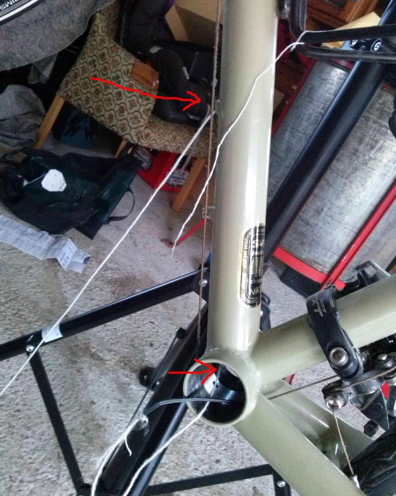
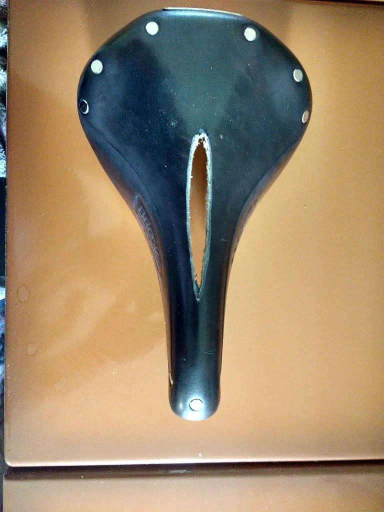

Cycle Travel
Reiserad
Hier möchte ich Erfahrungen zum Aufbau von Reiserädern weitergeben. Angefangen hat alles mit der ersten Reise, als ich 17 war. Wir wollten ans Meer. Mit dem Rad. Also haben wir die Karte von Mitteleuropa an die Wand befestigt und einen Dartpfeil geworfen. Das war in der Nähe von Marseilles. In den Sommerferien darauf sind wir in drei Wochen von Oberösterreich aus dorthin geradelt. Mit einem normalen Rennrad, leicht aufgerüstet. Blutige Anfänger waren wir, aber die Leidenschaft begann und lässt mich bis heute nicht los. Es folgten Radreisen quer durch die USA, Indien, Rumänien, Italien, Irland, Frankreich/Spanien, Norwegen. Anfangs sind wir immer mit umgebauten MTB gefahren (bis auf die Premiere nach Frankreich mit dem Rennrad). Stabiler als ein MTB geht es vermutlich nicht. Da gibt es kein Schwingen des Rahmens, auch nicht bei Volllast vorne und hinten. Allerdings ist die Sitzposition für sehr lange Touren m.E. nicht ideal, zumindest bei den heute gängigen Modellen. Wenn man jung und kräftig ist geht natürlich alles. Wer aber so wie ich ein Rennrad gewohnt ist, der weiß die ideale Sitzposition für lange Fahrten zu schätzen. Und da wird es schon schwieriger, ein gute Rad von der Stange zu finden.
Aufbau Surly Reiserad
Vorüberlegungen (Frühling 2016):
Zur Zeit fahre ich das TX Randonneur von der Fahrradmanufaktor. Damit bin ich grundsätzlich recht zufrieden und zur täglichen Fahrt in die Arbeit ist es mein bisher bestes Rad (stabil, schnell, Nabendynamo), quasi ein robustes Rennrad zu einem wirklich akzeptablen Preis (Shimano 105, 1500 Euro). Jedoch wird der Rahmen instabil wenn ich vorne am Lowrider Gepäck auflade und das Fahrgefühl leidet doch sehr darunter. Auf der Bank gibt es ja auch keine Zinsen, also investierte ich in etwas, das mir sinnvoll, nachhaltig, und lustvoll erschien: ein neues Reiserad. Die Recherchen im Netz sind langwierig und ich finde einfach nicht das richtige Rad für mich. Nach ein bisschen Recherche landet man immer wieder beim Long Haul Trucker von Surly (LHT) - natürlich aufgrund der US-Lastigkeit des www. Schließlich fällt die Entscheidung zum Selbstbau. Nicht zuletzt, weil mein Vater, ein gelernter Radmechaniker, mir helfen kann. Hier ist meine Einkaufsliste. Mit gut 1700 Euro komplett erscheint mir das Rad mit den feinen Teilen eher preiswert.
Schwierig gestaltete sich die Suche nach der passenden Rahmengröße, da ich keine(n) kenne, der/die einen LHT hat. Die Liste hier hat mir sehr geholfen https://docs.google.com/spreadsheets/d/1u1_H6gbuJ0T5Hhk2fjZxO5lWEHhPhOP_PqA05edgBGQ/edit#gid=23
Mit einer “Pubic Bone Height” von 83cm und einer Größe von 179cm hatten die meisten einen 56- oder 58-Rahmen. Nachdem ich mein derzeitiges Rad vermessen und es bestätigte sich das, was man in den Foren liest: der LHT hat ein relativ langes Oberrohr. Deshalb wählte ich dann den 56-Rahmen und war bei der ersten Ausfahrt froh drüber (Surly gibt übrigens detaillierte Angaben zur Rahmengröße und zu den verwendeten Teilen).
Der Blog von Katja und Frank ist sehr hilfreich beim Suchen der passenden Teile http://www.frankbauer.net/blog/2012/08/28/aufbau-eines-reiserads-surly-long-haul-trucker/
Bei Pete Owen fand ich genau die Art von Lenkeraufbau, welche mir am geeignetsten scheint. Die Cross-Lever Bremsen waren des Rätsels Lösung, wie Lenkerendschalthebel UND die Bremshebel am Bullhorn-Lenkerende montierbar sind. http://www.ratracecycles.com/tag/bullhorn-bars/
Habe nämlich festgestellt, dass ich den Untergriff beim Rennradlenker praktisch nie verwende. Beim Wiegetritt ist das Bullhorn der Griffhaltung eines Rennlenkers weitaus überlegen. Wenn ich später noch eine Aero-Position möchte, dann schon gleich einen Triathlonlenker-Aufbau wie bei meinem Rennrad. Die Schalthebel am Rennlenkerende würden außerdem bedeuten, bei jedem Schalten umgreifen zu müssen. Das ist mit der Bullhorn-Lösung nicht nötig. ’Gute Erfahrungen mit einem Bullhorn habe ich seit vielen Jahren am Rennrand, für das Reiserad fand ich sie hier http://www.adamk.ca/tourbike.html
Bremsen: bei der Recherche kam schnell raus, dass es sich um einen Religionsstreit handelt, aus dem man nicht schlau wird. Auf meinem MTB hab ich Hydraulik-Scheibenbremsen und bin begeistert davon. Aber ich habe schon Leute erlebt, die das Quietschen nicht losbekommen haben. Auf einer Radreise wäre das nervtötend. Außerdem fahre ich selbst schon seit der Kindheit mit Cantilever Bremsen, auch auf all meinen bisherigen Radreisen. Dass diese nicht genug Bremskraft hätten, kann ich aus meiner mittlerweile 20-Jährigen Reiseerfahrung nicht bestätigen. Im Gegenteil: die V-Brakes, die mehr Bremskraft haben sollten, stelle ich beim TX-Randonneur nicht fest und die Bremsbeläge sind sofort abgenutzt. Also doch die Tektro-Canti-Bremsen, die auch beim Surly LHT von der Stange montiert sind und die noch dazu günstig sind. Wenn doch die Bremskraft nicht optimal sein sollte, dann sollten Kool-Stop Beläge helfen, so das Internetz (Typ KS-DURADL für die Tektro-Bremsend passend).
Kettenlänge = 114 Glieder. Kettenstrebenlänge = 460mm, vorne großes Kettenblatt mit 44 Zähnen, hinten größtes Ritzel mit 32 Zähnen, Umlenkrädchen mit 11 Zähnen, http://www.bikegalerie.de/de/berechnungstools/kettenlaengenberechnung
Habe auch beschlossen, einen Nabendynamo einzubauen, wegen der Beleuchtung, aber vor allem als Stromquelle für das Smartphone, damit ich es als NAVI benutzen kann (Osmand oder Mapfactor Offline Navigationsmöglichkeiten - funktionieren super). Ich hoffe damit die Verirrungen in fremden Ländern minimieren zu können. Vor allem das Rausfinden aus Städten war immer ein Problem. Habe dazu auch den Cycle2Charge Lader bestellt, der scheinbar gut funktioniert (werde berichten).
War irritiert über die Schwerggängigkeit des Nabendynamos, wenn ich ihn nach dem Auspacken händisch ausprobierte. Ist aber scheinbar normal (“Polfühligkeit”). Manche im Netz berichten aber auch, dass der Konus bei Shimano oft zu streng eingestellt ist, und dass man aufgrund der Polfühligkeit das auch schwer feststellen kann (war auch so, s.u.).
Zusammenbau
Beim Einspeichen der Räder war die deutsche Seite von Sheldon Brown enorm hilfreich (auch die anderen Seiten von ihm zeugen von hoher fachlicher Kompetenz). Eine gute Seele hat sie auf Deutsch übersetzt http://www.sheldonbrown.com/german/wheelbuilding.html. Die Speichenlänge habe ich mit diesem Tool bestimmt:https://spokes-calculator.dtswiss.com/de/
Die Länge passte perfekt, sodass die Nippel genau mit dem Gewindeende abschlossen. Das genaue Spannen und Zentrieren überließ ich meinem Vater, denn dazu braucht es Expertise.
Das Einpressen der Gabellager gelang nach Abfeilen des Lackes an der Gabel und etwas zusätzlichem Feilen (eine entsprechende Fräse hatten wir leider nicht). Auch das Gabelrohr haben wir einfach mit einer Säge abgeschnitten und dann halbwegs winkelig gefeilt. Macht aber nichts, weil ohnehin ein Distanzring über das Rohrende rausragte - dies war wiederum nötig um das Cycle2Charge Teil ordentlich zu montieren.
Ein Problem gab es bei der Montage der Bremsen, bei der eine der vier Bremsen nach dem Festziehen der Schraube blockierte. Zunächst dachte ich, ich hätte die Messinghülse irgendwie gequetscht weil sie zu lange war und feilte sie kürzer. Dann aber wieder das gleiche Problem. Nach längerem Suchen stellte ich fest, dass das Gewinde der Schraube nicht bis zum Schraubenkopf reicht (siehe Bild) und dadurch der Montagebolzen am Rahmen aufgedehnt wurde. So was darf eigentlich nicht sein! Mit einer zusätzlichen Beilagscheibe und dem Abfeilen des Bolzens am Rahmen funktionierte es dann - leider ist nun der Lack ab und ich bin gespannt, was der Rost im Laufe der Zeit anstellt.
Mein Vater hat die Räder super zentriert und gespannt - er macht das nach Gefühl, ohne Stimmgabel oder Mess-Schnickschnack. Die Sputnik Felge hüpfte etwas am Bund, was auch durch Zentrieren nicht gut zu machen war, die Alex Felgen hingegen liefen super rund.
Beim XT-Nabendynamo waren die Lager zu streng eingestellt (wie manche im Netz berichteten) und Papa lockerte sie etwas.
Der Umwerfer vorne war ein Top-Swing Modell, d.h. normalerweise zieht man von oben. Nach einer gewissen Ratlosigkeit und als ich schon fast einen neuen Umwerfer bestellen wollte, entdeckte ich die Dual-Pull-Mechanik des Werfers. Man braucht nur das Seil durch den Umwerfer nach unten leiten, und schon kann man von unten ziehen.
Die Kombination von Lenkerend-Schalthebel und Cross-Lever Bremsen funktioniert gut, es war ein bisschen Rumspielen nötig, bis ich passende Winkel fand und die Schaltzüge frei verliefen. Auch das Ladegerät war unkompliziert zu montieren und die Kabelverlegung war einfach. Das LG-Handy schaltete gleich beim ersten Testen auf “langsames Aufladen”. Werde unten berichten, wie das Ding im Echtbetrieb funktioniert.
Und so schaut der LHT nun aus (ohne Lowrider und Licht)
Es werde Licht
Der aufwändigste Teil des Montage war wohl das Licht. Im www gibt es ja auch da zwei Philosophien, nämlich die Kabel “Unterputz” (im Rahmen) oder außen verlegen. Für den LHT habe ich keine gute Quelle im Web gefunden, aber einige Löcher sind vorhanden, so etwa je ein kleines Loch am Ende des Kettenrohres bei der Nabe. Leider war auf dem anderen Ende, nämlich am Beginn des Oberrohrs (Nähe Gabel) kein Loch, und ich wollte auch keines bohren. Auch hier wieder sehr widersprüchliche Infos (Loch = Rahmeninstabilität, Loch = kein Problem). Ich entschloss mich, als Eintrittsloch die Gewindebohrung des unten liegenden Flaschenträgers zu wählen, weil ich mir hier sicher keine Flasche montieren werde (da ist ja immer der Dreck drauf). Das Durchziehen des Drahtes war sehr zeitaufwändig und schwierig und funktionierte nur, nachdem ich das Tretlager nochmal ausbaute. Ich verwendete einen Wollfaden und mittels Staubsauger versuchte ich diesen jeweils bei der Tretlageröffnung heraustzusaugen. Dann zog ich das Kabel mit dem Wollfaden nach. Auch der Einbau der Kunsstofflagerschale war schwierig, weil kaum Platz für das Kabel blieb, gelang aber dann doch.

Erste Erfahrungen
Die erste 100-km Ausfahrt: der Rahmen ist sehr steif, wie sich beim Wiegetritt auf einer steile Schotterstraße herausstellt. Und der LHT läuft super. Einzig die Kettennietung führte z.T. zu Schaltunreinheiten, aber das lässt sich leicht ausbügeln. Ja und der Sattel ist natürlich noch nicht eingefahren.
Erste “echte” Ausfahrt mit Gepäck (ohne Low-Rider)
Das Rad rollt wirklich gut und es fühlt sich steif an, im positiven Sinne. Es hat sich allerdings ein Rupfen beim Bremsen des Vorderrades eingestellt, das zum Teil fast beängstigend ist, und die Gabel biegt sich regelrecht. Scheinbar greifen die Cool-Stop Bremsbeläge zu stark. Habe sie nachgestellt und wieder so, dass sie vorne zuerst bremsen (indem man hinten einen Karton einschiebt und danach die Bremsbacken festzieht, also “toe-in”). Auch das Gabellager war etwas zu locker eingestellt. Jetzt ist das Stottern fast weg.
Dieses Problem ist bei Stahlrahmen bekannt und in der Cyclo-Cross Szene viel Diskutiert (hier).
Bei meinem alten Tourenrad, ein umgebautes MTB, auch mit alten Canti-Bremsen, gab es das Problem überhaupt nicht!
Auf dem LHT sitzt es sich gut, eher sportlich (durch das lange Oberrohr). Beim kurzen Rädertausch mit einem Trekking-Rad wurde das extrem offenbar, und ich konnte mir nicht vorstellen, wie ich früher lange Touren (>120km) auf einem MTB schaffte. Der direkte Vergleich mit meinem alten umgebauten MTB, das ich für 15 Jahre zum Tourenfahren nutzte, war schon bemerkenswert: der LHT schluckt Vibrationen und Stöße wesentlich besser, obwohl ich am MTB recht fette Reifen und weniger Luftdruck hattte. Und die Kraftübertragung ist am LHT (beim Randonneur überhaupt) um Längen besser als am MTB.
Der neue Brooks-Sattel muss natürlich noch eingeritten werden. Anm: dauerte so in etwa 500km
Der Cycle2Charge-Lader funktioniert gut, es wird ab 12-15km/h geladen, und mein altes LG Optimus verbraucht bei hellster Bildschirmeinstellung und Navigation weniger Strom als aufgeladen wird (bei eher flachen Routen) bzw. hält sich der Akkustand bei hügeligem Gelände siehe hier.
Die erste Härtetest (Salzburg - Spanien, 2500km)
Bin nun vollbeladen die erste längere Tour gefahren. Dabei waren einige sehr grobe Schotterstraßen, extrem steile Auf- und Abfahrten (Bremse!) dabei, das ganze voll beladen. Und übrigens auch nach einem Unfall, bei der mich ein Auto von der Seite her gerammt hat. Das Surly und ich haben das überlebt, wenn auch mit Schrammen.
Bin wirklich zufrieden mit dem LHT, er fährt sich mit Gepäck wirklich gut. Ganz steif ist er mit zwei Taschen am Low-Rider nicht, aber wesentlich steifer als der TX-Randonneur von der Radmanufaktur. Die Übersetzung machte sich bei den steilen Hügeln echt bezahlt. Bei den extrem steilen Abfahrten waren die Bremsen ok, es kostet allerdings schon etwas Kraft. Das Rupfen der Vordergabel war gar nicht mehr bemerkbar.
Gut, dass ich die undichten Schwalbe-Schläuche mit recht billigen Conti-Schläuchen ersetzt hatte, so brauchte ich die drei Wochen nicht mal Luft nachfüllen (nie wieder Schwalbe Schläuche!). Dank des B-17-Sattels hatte ich kaum Probleme mit dem Sitzen.
Der klappbare Radständer war wichtig, vor allem beim Zelten auf der Wiese, damit ich das Rad nicht umlegen musste (XLC Seitenständer ‘Travel Stand’ KS-S02). Auch mit dem Zelt (MSR Hubba) machte ich gute Erfahrungen.

Irgendwo in Frankreich (erstes Bild) und Pamplona (Chasing the Bull-Horn)
Zur Navigation: Der Cycle2Charge Lader hat verlässlich durchgehalten. Das Handy hatte ich bei Schönwetter mit der Finn-Universal Silikonhalterung fixiert, bei Schlechtwetter in der Ortliebe GPS Hülle verstaut. Dabei habe ich das Ladekabel einfach mit eingerollt, und das war durchaus wasserdicht, das Spiegeln der Folie ist ein Problem, aber kein allzu großes. OSM war verlässlich, die Routenplanung mit Cycle Travil zu 98% einwandfrei, manchmal wurde ich aber auf irre Schotterstraßen geführt.
Nachtrag April 2017: Auf der Route Sizilien - Bologna, 1600km, sehr kaputte Straßen und auch Regenwetter war der Cycle2Charge recht verlässlich in Kombination mit dem Moto G3 Handy.
Einschneidende Erlebnisse
Der B17 war die ersten paar Tausend Kilometer ein Traum, sicher einer der besten Sättel bisher. Nach und nach wurde er aber weniger bequem und Nachspannen half auch nicht. Die Stellen, bei denen die Sitzknochen aufliegen, gaben nach und wanderten nach unten, und der Längsbug drückte unangenehm. Nach ca. 7000km und ein bisschen Recherchieren entschloss ich mich zur Operation und schnitt den Sattel aus. Seitdem fährt er sich wieder bequemer. Ein Langzeittest steht noch aus.

Nachtrag: es war eine gute Idee, der Sattel fuhr sich deutlich bequemer, und die Spannung hielt sich gut. Allerdings ist mir das Gestell gebrochen (nach ca. 9000km).
GESTOHLEN!
Leider wurde mein LHT im September 2018 in Antwerpen gestohlen. Was für ein Schock!!! Nach 10.000 wundervollen Kilometern also so ein Ende :-(
Also muss ein neuer LHT her…
Nachdem ich mich vom Schock des gestohlenen Rades erholt hatte, kamen die Überlegungen für einen neuen LHT, vor allem, nachdem ich wieder feststellen musste, dass die Reiseräder von der Stange vergleichbar teuer sind und keines nicht so recht meinen Vorstellungen entsprach. Außerdem hatte ich ein paar Teile bereits rumliegen. Hier die Einkaufsliste(ca. 1500 Euro alles zusammen). Und so sieht “Black Beauty” aus